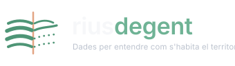

Observatori del territori
Persones que arriben, marxen, tornen, pernocten, lloguen, compren, hereten, visiten, treballen, voten, omplen segones residències o desapareixen del padró real de la vida quotidiana.
El cabal humà que travessa, omple o buida cada municipi. Dades oficials, traçables, amb font, data i fórmula visibles.
Explora el territori